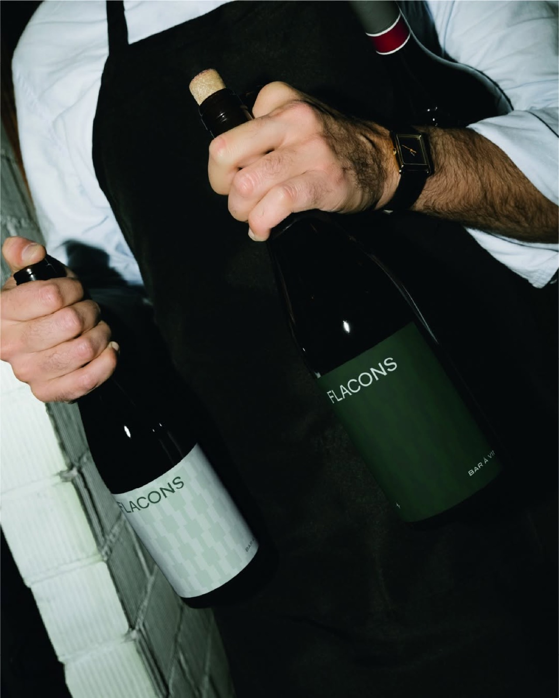
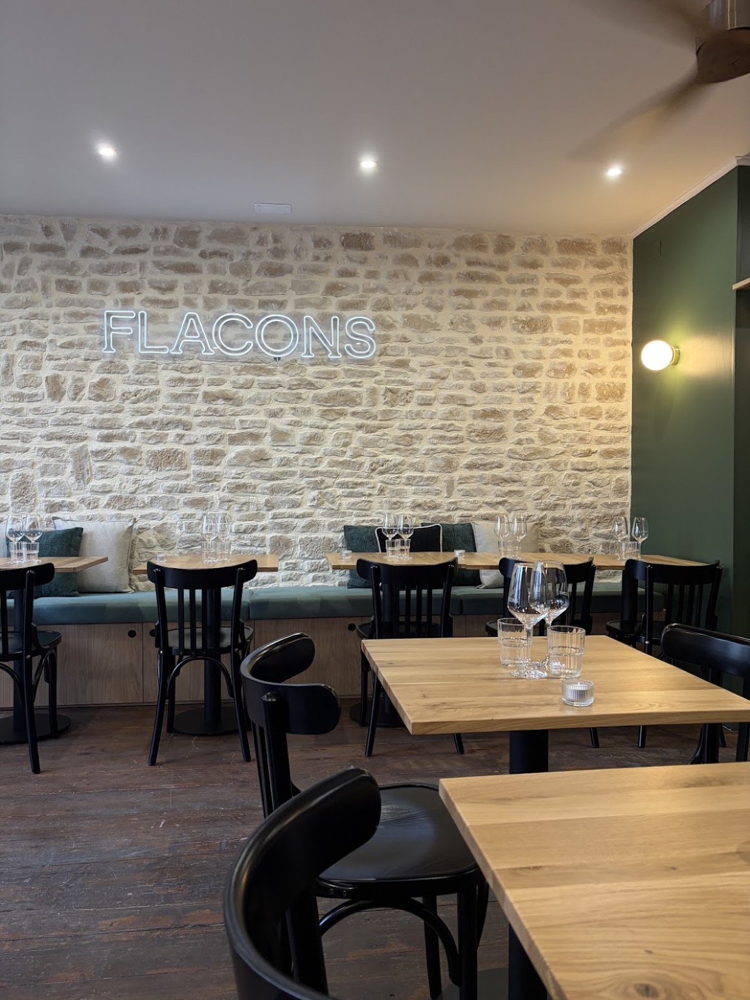
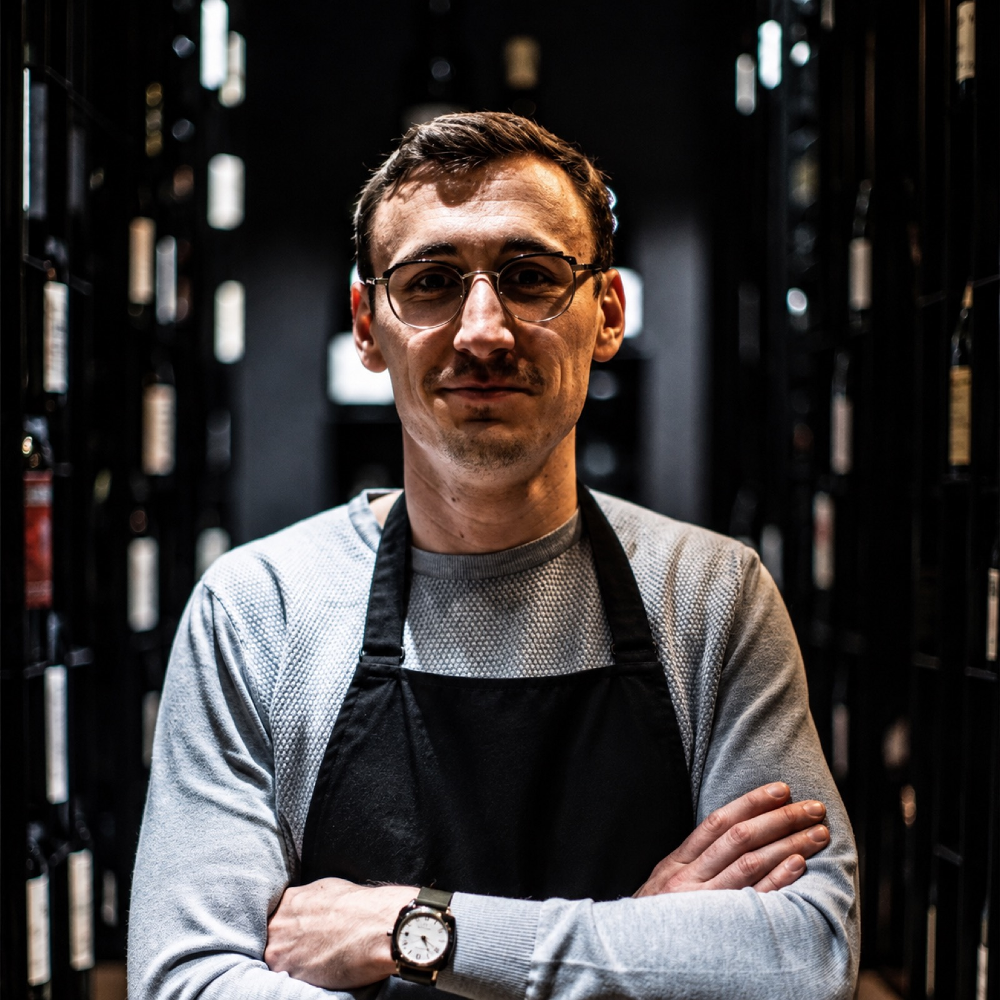
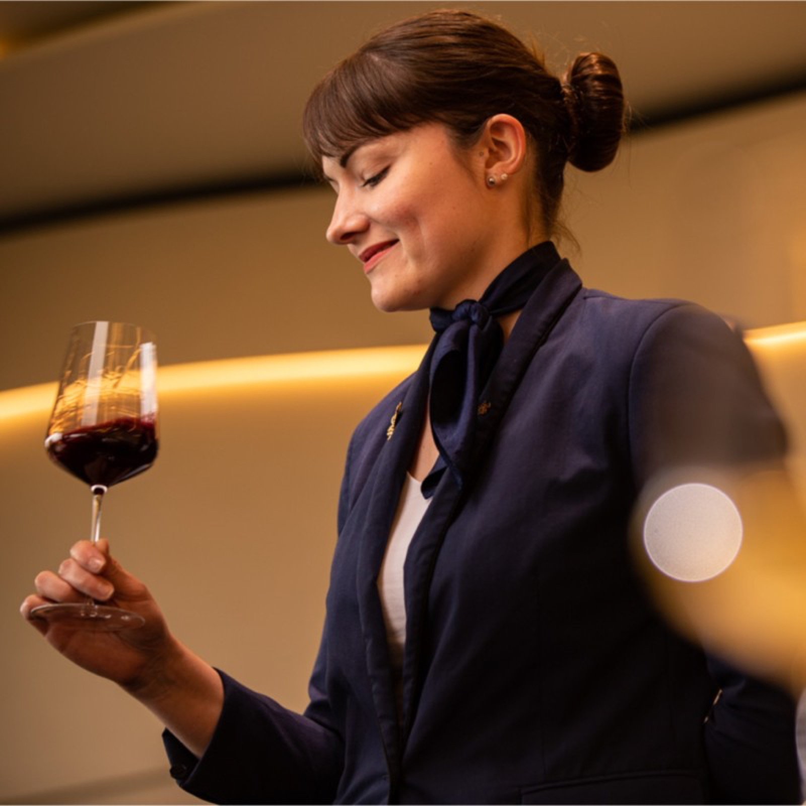
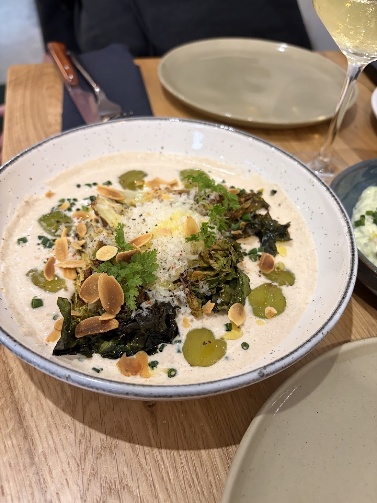
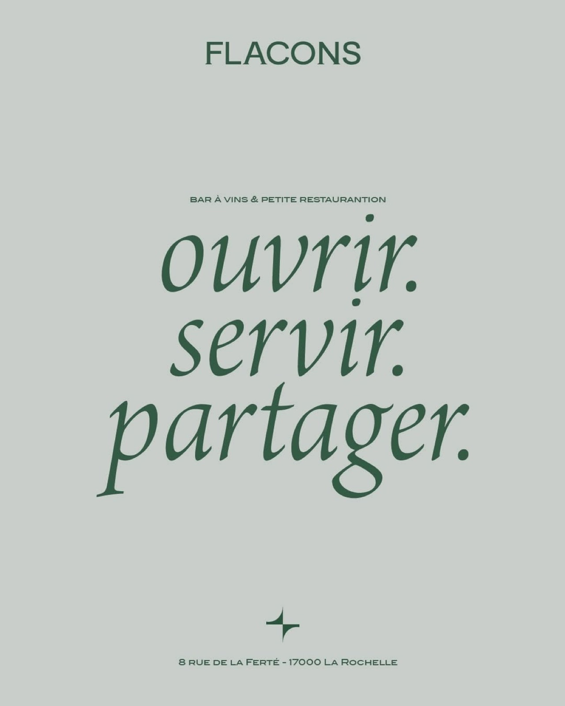
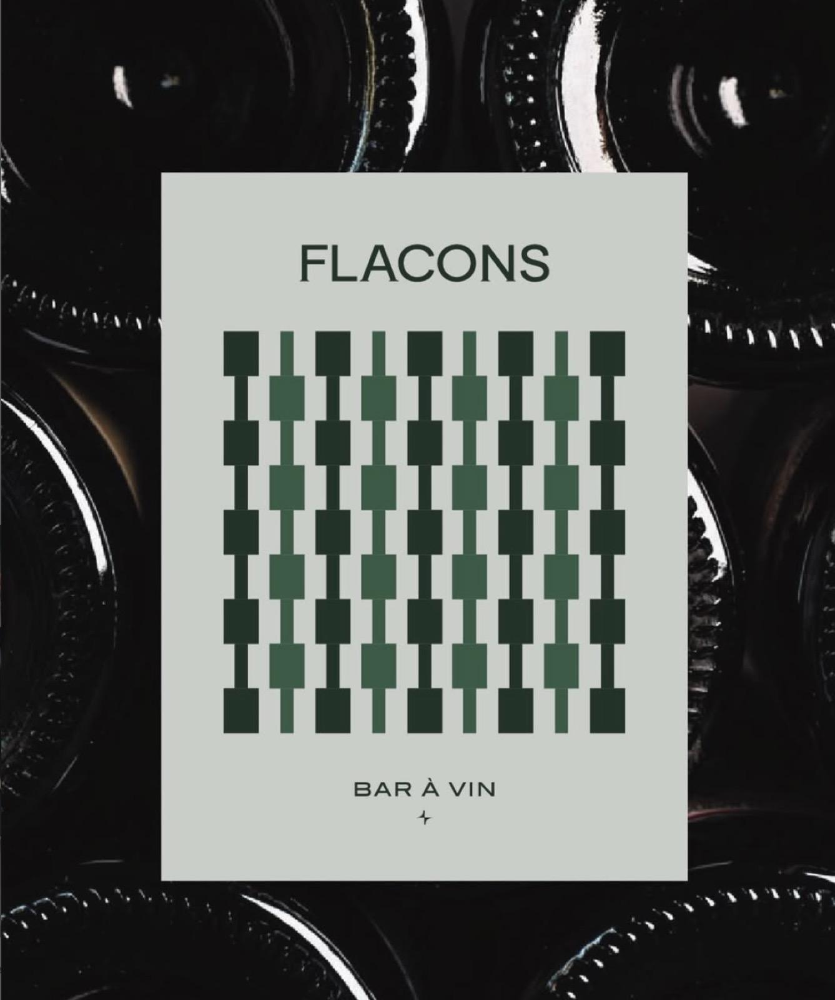
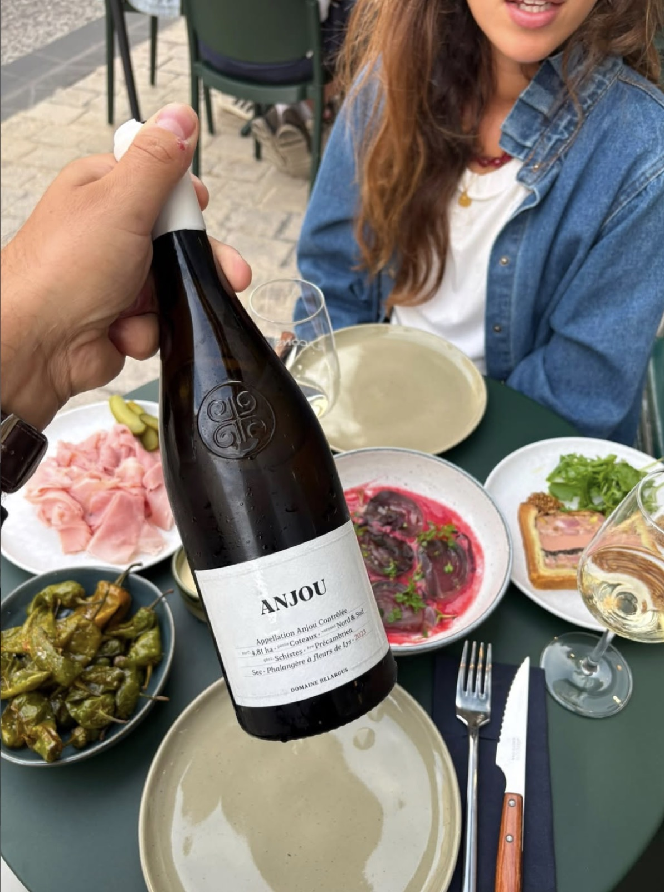

Flacons, c’est notre bar à vin à La Rochelle.
Nous l’avons imaginé autour de ce que nous aimons dans notre métier et de tout ce que les années nous ont permis de découvrir. Des vins qui nous ont marqués, des vignerons que nous avons rencontrés et cette envie, toujours intacte, de faire découvrir une bouteille que l’on aime.
À l’intérieur comme en terrasse, on vient pour un verre, quelques assiettes ou pour prendre le temps de partager la soirée.

À quelques minutes du Vieux-Port, nous avons imaginé Flacons comme un lieu où le vin se découvre autant qu’il se partage.
On s’installe au bar ou autour d’une table, à l’intérieur comme en terrasse lorsque les beaux jours arrivent. On peut venir pour découvrir un vin, retrouver des amis autour de quelques assiettes ou laisser la soirée se prolonger autour d’une bouteille.
Nous voulions un lieu vivant et chaleureux, où notre métier trouve naturellement sa place dans le moment que vous êtes venus passer.
Alors installez-vous. Nous trouverons ensemble le flacon qui va avec.

Une sélection personnelle, qui continue de s’écrire au fil des rencontres.
Nous sommes Baptiste et Manon. Le vin est notre métier depuis plusieurs années et c’est aussi autour de lui que nos parcours se sont rencontrés.
Manon a commencé son parcours à Paris, notamment chez Hélène Darroze et au Petit Sommelier. Elle a ensuite rejoint La Rochelle pour devenir cheffe-sommelière chez Christopher Coutanceau.
Baptiste a lui aussi fait ses armes à Paris, au Meurice, avant de rejoindre La Rochelle et de prendre la direction de Gueuleton.
Ces expériences ont façonné notre regard sur le vin et notre manière de le partager. Au fil des années, notre parcours s’est enrichi de rencontres avec les vignerons, de domaines que nous avons appris à connaître et de bouteilles qui ont durablement marqué nos goûts.
Certaines nous accompagnent depuis longtemps, tandis que de nouvelles découvertes continuent de faire évoluer notre sélection.
Flacons est né dans le prolongement de ce parcours. L’envie de réunir dans un même lieu les vins que nous aimons, les vignerons dont nous apprécions le travail et toutes ces bouteilles que nous avons, à notre tour, envie de faire découvrir.


Notre cave rassemble aujourd’hui plus de 120 références issues du vignoble français.
Derrière cette sélection, il y a des domaines que nous connaissons depuis plusieurs années et des vignerons rencontrés au fil de notre parcours. Il y a aussi les découvertes plus récentes, celles qui nous surprennent suffisamment pour avoir immédiatement envie de les faire entrer chez Flacons.
Nous cherchons des vins qui nous plaisent avant tout, mais aussi des histoires et des façons de travailler auxquelles nous sommes sensibles. C’est ce lien avec les vignerons et leur travail qui donne du sens à la sélection.
La cave n’est donc jamais vraiment figée. Elle évolue avec les millésimes, les rencontres et nos propres découvertes.
Chaque semaine, nous choisissons une douzaine de références à servir au verre. C’est une autre façon de faire vivre la cave et de vous emmener vers des vins que vous n’auriez peut-être pas pensé à ouvrir.
Dites-nous ce qui vous fait envie. Nous choisirons la suite ensemble.

Parce qu’autour d’un flacon, la table n’est jamais très loin.
Nous accordons à notre carte la même attention qu’à notre sélection de vins : le choix du produit, de son origine et de celles et ceux qui le font.
Nous travaillons avec des producteurs que nous connaissons et dont nous apprécions le travail. Les huîtres viennent de chez Margat et les fromages de la famille Ropert. Notre focaccia est préparée sur place, tandis que la carte évolue au rythme des produits et des saisons.
Nous avons voulu une cuisine qui accompagne naturellement les vins. Des assiettes que l’on pose au centre de la table, que l’on partage et que l’on commande au fil de la soirée.
Il y a les bouteilles que l’on ouvre pour le plaisir, et celles que l’on a envie de mieux comprendre.
Nous organisons régulièrement des dégustations autour d’une région, d’un domaine, d’un vigneron ou d’un thème que nous souhaitons mettre en lumière.
Pendant deux heures, nous ouvrons six bouteilles et prenons le temps d’aller plus loin dans ce qui fait chacune d’elles. Comprendre un terroir, saisir les choix d’un vigneron, mettre des mots sur ce que l’on ressent dans le verre : autant de clés qui permettent ensuite d’apprécier le vin autrement.
Nous partageons notre expérience de sommeliers dans un format accessible et vivant, où chacun peut approfondir ses connaissances et affiner ses goûts.
Il y a aussi des moments où l’on souhaite réunir tout le monde autour de la même table.
Pour un dîner, une célébration ou un événement professionnel, Flacons peut être privatisé. Nous préparons le moment avec vous et imaginons une sélection en accord avec vos envies.
Nous pouvons également faire sortir les bouteilles de notre cave et organiser des dégustations directement en entreprise.
L’endroit change, mais l’idée reste la même : ouvrir quelques flacons et créer un moment autour de ce qu’ils ont à raconter.
Flacons se trouve au 8 rue de la Ferté, au cœur de La Rochelle, à quelques minutes à pied du Vieux-Port.
À l’intérieur, on se retrouve autour du bar ou à table. Dès que les beaux jours arrivent, la terrasse prend le relais et permet de profiter de la soirée dehors.
Venez pour découvrir les vins du moment, partager quelques assiettes ou simplement retrouver ceux avec qui vous aviez envie de passer la soirée.
Pour une table, un groupe ou une privatisation, contactez-nous.
Parce que Flacons se raconte aussi par celles et ceux qui sont venus y passer un moment.
« Super adresse à La Rochelle, la sélection de vins est excellente, le cadre est convivial et chaleureux, on est très bien assis et la boustifaille sur place est délicieuse. »
CLEMENT THEREAU — GOOGLE« Une belle sélection de vins et des assiettes raffinées, parfaites à partager. Les produits sont de qualité, les associations gourmandes et le service très agréable. »
NOÉMIE BALLANGER — GOOGLE« La carte des vins permet tout genre de plaisir autant pour les amateurs que les connaisseurs. Nous avons également mangé quelques assiettes à partager et c'était très bon. »
XAVIER LAUFFENBURGER — GOOGLELes bouteilles qui viennent d’arriver, les domaines que nous rencontrons et ce qui fait vivre Flacons au fil des semaines.
Une autre manière de suivre ce que nous ouvrons et ce que nous avons envie de partager.


